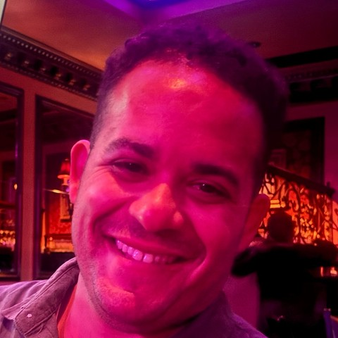

NOVEMBER 12, 2016 — DAY ONE
The start
I started at Woolco Foods on November 12, 2016. A decade in, the work is the same as it was on day one: show up for the customer.

Ten years in food service and hospitality. Building by night. Everything I make lives here.
I'm Holden Krivelin. For ten years I've worked at Woolco Foods — I put in orders for customers, I handle customer relations, I maintain relationships. By night, I build.
I created this and I risked a lot of money on it — over $20,000 in debt — because I believe that MHG is the future.
You can't fake passion. You can't teach passion. I literally eat, sleep, breathe this type of stuff.
The question under everything I make is simple: how can we make people's lives better? Not just the businesses — everybody.
I want to create the future I would want in people's hands — people taking action, forging their own paths. We grow with you, and you grow with us.

Ten years at Woolco Foods — a food service distributor here in New York. This is the work, the way it actually goes.
I started at Woolco Foods on November 12, 2016. A decade in, the work is the same as it was on day one: show up for the customer.
I put in orders for customers — restaurants, bars, and cafés across New York City. I handle customer relations and maintain those relationships. Credit applications and financial paperwork go from my desk to accounting, and I follow each one through to a decision.
A $1,600 performance bonus, earned October 2026.
November 19, 2026: eleven restaurant check-ins in a single day — between the orders, the emails, and the follow-ups. That's the pace when the work matters.
"I don't like to over-promise and under-deliver."
"I come pre-prepared when I walk into places."
"Speaking to people is my forte."
Walk it in order. This is not a showcase. It is a progression — the months, the moments, and what each one cost and taught, from the first build to right now.
November 12, 2016: Holden starts at Woolco Foods. Ten years of putting in orders for customers, handling customer relations, maintaining relationships. The day job that funded everything in this museum — and taught him how the people who make everything run are treated.
It started on a walk in the early evening, a little before April. A big warehouse-style recreational bar and grill stopped him in his tracks, and the idea for Meat arrived — the aha moment everything in this museum walks from. First came Meat. Then Hospitality. Then the paperwork.
March 22, 2026: the LLC is filed — Meat Hospitality, on paper. The Group comes later: on August 19, 2026, the name is completed — Meat Hospitality becomes Meat Hospitality Group. The idea is simple enough to say in one line: we build the things we wish existed.
October 11: Intent, the AI, becomes Beck — at your beck and call. October 19, his birthday: the lead line is set — 'We build the things we wish existed.' October 27: Human Intelligence is coined, and the publish gate is set — nothing ships until its value is proven. October 30: the execution plan locks — seven waves, all doors by the end of 2027. October 31: the freeze — no spending ahead of the mission.
November 1: Welcome Home becomes the theme across everything — made for speaking to you, not for your wallet. November 3: Meat Life goes public. November 11: Everybody Earns — the doctrine that loyalty and consistency get rewarded, for guests, workers, drivers, creators and owners alike, born from a bartender friend's advice. November 12: ten years at Woolco. November 14: Quality over quantity becomes the law.
November 19: the founder steps forward and the company steps back. A fingerprint becomes the signature. Publishing stops. The work continues in the background, on his own dime, over $20,000 of his own money in — because he believes this is the future.
The rejections hang in this museum too. The pay that climbed to seventy and fell back to forty. The applications answered with silence or no. Seven doors closed — and the building continued anyway, at night, after the shifts. Progression is not a straight line up. It is a line that refuses to stop.
The full showcase is sealed in a private vault, to be revealed at scale, on his terms — never given away for free. And the page you are standing on becomes what it was always becoming: a museum of progression. You are here.
"I believe the future is waiting for me, building a category that has yet to be seen." — HOLDEN